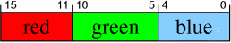

| Autor: | Wojciech Muła |
|---|---|
| Dodany: | 31.08.2001 |
| Aktualizacja: | 2.06.2008 |
Obecnie większość bibliotek graficznych wewnętrznie używa obrazów 32bpp (BPP — Bits Per Pixel), dopiero podczas wyświetlania są one konwertowane do odpowiedniego formatu, zależnego od sprzętu (trybu karty graficznej).
Poniżej przedstawiono formaty rozważanych pikseli.
Oto struktury opisujące piksele w języku C:
typedef unsigned char byte; // 8 bitów
typedef unsigned short int word; // 16 bitów
typedef unsigned int dword; // 16 bitów
typedef struct {
word b: 5;
word g: 5;
word r: 5;
word _: 1; // nieużywany
} pixel15bpp;
typedef struct {
word b: 5;
word g: 6;
word r: 5;
} pixel16bpp;
typedef struct {
byte b,g,r;
} pixel24bpp;
typedef struct {
byte b,g,r;
byte _; // nieużywany
} pixel24bpp;
Nadmienię tylko, że piksele 24bpp nie są stosowane — po prostu nie sprawdziły się. Oszczędność jednego bajtu nie rekompensowała skomplikowania kodu i opóźnień związanych z brakiem wyrównania.
Jest to chyba jedna z najlepszych metod do implementacji na x86. Polega na prekalkulowaniu wartości pikseli. Bynajmniej nie tworzone są tablice dla wszystkich pikseli — proszę wyobrazić sobie rozmiar takiej tablicy dla 24bpp — całe 16MB i te problemy z cache.
Piksel źródłowy jest dzielony na bajty, tak więc dla pikseli 24/32bpp potrzebne będą trzy, a dla pikseli 15/16bpp dwie tablice 256-elementowe.
Ograniczę się tylko do konwersji 16bpp/32bpp, inne konwersje Czytelnik z łatwością sam napisze.
dword pix16to32bpp_lookup[2][256]; // rozmiar 256*4*2 = 2kB
word pix32to16bpp_lookup[3][256]; // rozmiar 256*2*3 = 1.5kB
void fill_pix16to32bpp()
{
for (int i=0; i<256; i++)
{
// |gggbbbbb| -- młodszy bajt piksela 16bpp
// |00000000|000ggg00|bbbbb000| -- rozkład bitów w pikselu 32bpp
dword blu = i & 0x1f;
dword grn1 = i & 0x1e;
pix16to32bpp_lookup[0][i] = (blu << 3) | (grn1 << 5);
// |rrrrrggg| -- starszy bajt piksela 16bpp
// |rrrrr000|ggg00000|00000000|
dword red = i & 0xf8;
dword grn2 = i & 0x07;
pix16to32bpp_lookup[1][i] = (red << 16) | (grn2 << 13);
}
}
void fill_pix32to16bpp()
{
for (int i=0; i<256; i++)
{
word blu = i >> 3;
word grn = i >> 2;
word red = i >> 3;
pix32to16bpp_lookup[0][i] = blu;
pix32to16bpp_lookup[1][i] = grn << 5;
pix32to16bpp_lookup[2][i] = red << 11;
}
}
pixel32bpp pix16to32bpp(pixel16bpp SRC)
{
word src = *(word*)&SRC;
dword res = pix16to32bpp_lookup[0][src & 0xff] |
pix16to32bpp_lookup[1][src >> 8];
return *(pixel32bpp*)&res;
}
pixel16bpp pix32to316pp(pixel32bpp SRC)
{
dword src = *(dword)&SRC;
word res = pix32to16bpp_lookup[0][(src >> 0) & 0xff] |
pix32to16bpp_lookup[1][(src >> 8) & 0xff] |
pix32to16bpp_lookup[2][(src >> 16) & 0xff];
return *(pixel16bpp*)&res;
}
Podczas takich konwersji część bitów piksela źródłowego jest tracona, są to najmłodsze bity każdej ze składowych; oto przykład w C.
pixel16bpp convert32_to_16bpp(pixel32bpp src)
{
pixel16bpp dst;
dst.r = src.r >> 3; // 8-5
dst.g = src.g >> 2; // 8-6
dst.b = src.b >> 3; // 8-5
return p;
}
Pokażę funkcję dla konwersji 32bpp na 16bpp, konwersja na 15bpp będzie wymagać nieznacznych zmian w kodzie. Użycie rozkazu pmaddwd wyeliminowało co najmniej dwa przesłania, jedno przesunięcie bitowe i operację logiczną or.
; wto 29 paź 2002 16:43:22 CET
segment .data
mask_rg dd 0x001f001f, 0x001f001f
mask_b dd 0x00001f00, 0x00001f00
shift dd 0x00800001, 0x00800001 ; 1, 1<<11, 1, 1<<11
segment .text
; esi -> wskaźnik na obraz 32bpp
conv_32bpp_to_16bpp:
movq mm0, [esi] ; mm0 = |0000 0000|rrrr rrrr|gggg gggg|bbbb bbbb|...
psrld mm0, 3 ; mm0 = |0000 0000|000r rrrr|rrrg gggg|gggb bbbb|...
movq mm1, mm0
pand mm0, [mask_rb] ; mm0 = |0000 0000|000r rrrr|0000 0000|000b bbbb|...
pand mm1, [mask_g] ; mm1 = |0000 0000|0000 0000|000g gggg|g000 0000|...
pmaddwd mm0, [shift] ; mm0 = |0000 0000|000b bbbb|
; |rrrr r000|0000 0000| +
psrld mm1, 2 ; mm1 = |0000 0000|0000 0000|0000 0ggg|ggg0 0000|...
por mm0, mm1 ; mm0 = |0000 0000|0000 0000|rrrr rggg|gggb bbbb|...
; mm0 = |pix1| 0 |pix0| 0 |
ret
; wejście: eax - piksel 32bpp
; wyjście: ax - piksel 15bpp
; eax = |xxxx xxxx|rrrr rrrr|gggg gggg|bbbb bbbb|
and eax, 00f8f8f8 ; eax = |0000 0000|rrrr r000|gggg g000|bbbb b000|
shr eax, 3 ; eax = |0000 0000|000r rrrr|000g gggg|000b bbbb|
shl al , 3 ; eax = |0000 0000|000r rrrr|000g gggg|bbbb b000|
shl ax , 3 ; eax = |0000 0000|000r rrrr|gggg gbbb|bb00 0000|
shr eax, 6 ; eax = |0000 0000|0000 0000|0rrr rrgg|gggb bbbb|
; wejście: eax - piksel 32bpp
; wyjście: ax - piksel 16bpp
; eax = |xxxx xxxx|rrrr rrrr|gggg gggg|bbbb bbbb|
and eax, 00f8fcf8 ; eax = |xxxx xxxx|rrrr r000|gggg gg00|bbbb b000|
shr ah, 2 ; eax = |xxxx xxxx|rrrr r000|00gg gggg|bbbb b000|
shr eax, 3 ; eax = |xxxx xxxx|000r rrrr|0000 0ggg|gggb bbbb|
shl ax, 5 ; eax = |xxxx xxxx|000r rrrr|gggg ggbb|bbb0 0000|
shr eax, 5 ; eax = |xxxx xxxx|0000 0000|grrr rggg|gggb bbbb|
; wejście: ax - piksel 16bpp
; wyjście: ax - piksel 15bpp
; niszczy: bl
; ax = |rrrr rggg|gggb bbbb|
mov bl, al
and bl, 00011111b
and al, 11011111b ; ax = |rrrr rggg|gg0b bbbb|
add al, bl ; ax = |rrrr rggg|ggbb bbb0|
shr ax, 1
Podczas konwersji brakuje części najmłodszych bitów, są one wypełniane zerami; oto przykład w C.
pixel32bpp convert(pixel15bpp src)
{
pixel32bpp dst = {src.r << 3, src.g << 3, src.b << 3, 0};
return dst;
}
; wejście: ax - piksel 15bpp
; wyjście: eax - piksel 32bpp
; eax = |xxxx xxxx|xxxx xxxx|0rrr rrgg|gggb bbbb|
shr eax, 6 ; eax = |xxxx xxxx|xx0r rrrr|gggg gbbb|bb00 0000|
shr ax, 3 ; eax = |xxxx xxxx|xx0r rrrr|000g gggg|bbbb b000|
shr al, 3 ; eax = |xxxx xxxx|xx0r rrrr|000g gggg|000b bbbb|
shl eax, 3 ; eax = |xxxx xxxx|rrrr r000|gg0g g000|bbbb b000|
segment .data
mask_rb dw 0b0111110000011111, 0x7c1f, 0x7c1f, 0x7c1f
mask_g dw 0b0000001111100000, 0x03e0, 0x03e0, 0x03e0
shifts dw 0b0000001000001000, 0x0208, 0x0208, 0x0208 ; 1<<9 | 1<<3
mask_rb32bpp dd 0x00f800f8, 0x00f800f8
segment .text
; wejście:
; esi -> wskaźnik na 2 piksele 15bpp
; wyjście:
; mm0 = 2 piksele 32bpp
; niszczy:
; mm1, mm2, mm3, mm4
conv_15bpp_to_32bpp:
pxor mm1, mm1
movq mm0, [esi] ; mm0 = | 0 | 0 |pix1|pix0|
punpcklwd mm0, mm1 ; mm0 = | 0 |pix1| 0 |pix0|
movq mm1, mm0
pand mm0, [mask_rb] ; mm0 = |00000000 00000000|0rrrrr00 000bbbbb|..
pand mm1, [mask_g] ; mm1 = |00000000 00000000|000000gg ggg00000|..
pmaddwd mm0, [shift] ; mm0 = |00000000 000000rr|rrr00000 bbbbb000| +
; |00000000 rrrrr000|00bbbbb0 00000000| =
; |00000000 rrrrrxxx|xxxxxxx0 bbbbb000|..
pslld mm1, 6 ; mm1 = |00000000 00000000|ggggg000 00000000|
pand mm0, [mask_rb32] ; mm0 = |00000000 rrrrr000|00000000 bbbbb000|
por mm0, mm1
ret
Zamiast „suchego” kodu w C pokażę praktyczną realizację tablicowania w asemblerze.
W jeden pętli przetwarzane będą po dwa piksele, przede wszystkim po to by zminimalizować liczbę odwołań do pamięci.
segment .data
lookup_lo times 256 dd 0 ; tablice są wypełniane "gdzieś tam"
lookup_hi times 256 dd 0
; esi -> wskaźnik na 2 wejściowe piksele 16bpp
; edi -> wskaźnik na 2 wyjściowe piksele 32bpp
conv_16bpp_to_32bpp:
mov eax, [esi] ; ładowane są 2 piksele
movzx ecx, al ; młodsze
movzx edx, ah ; i starsze słowo pierwszego piksela
bswap eax
movzx ebx, ah, ; młodsze
and eax, 0xff ; i starsze słowo drugiego piksela
mov ebx, [lookup_lo + ebx*4]
mov ecx, [lookup_lo + ecx*4]
or ebx, [lookup_hi + edx*4]
or ecx, [lookup_hi + eax*4]
mov [edi+0], ebx
mov [edi+8], ecx
ret
; wejście: ax - piksel 16bpp
; wyjście: eax - piksel 32bpp
; eax = |xxxx xxxx|xxxx xxxx|rrrr rggg|gggb bbbb|
shl eax, 5 ; eax = |xxxx xxxx|xxxr rrrr|gggg ggbb|bbb0 0000|
shr ax, 5 ; eax = |xxxx xxxx|xxxr rrrr|0000 0ggg|gggb bbbb|
shr eax, 3 ; eax = |xxxx xxxx|rrrr r000|00gg gggg|bbbb b000|
shl ah, 2 ; eax = |xxxx xxxx|rrrr r000|gggg gg00|bbbb b000|
; czw 24 paź 2002 18:59:18 CEST
segment .data
mask_r db 0b1111100000000000, 0xf800, 0xf800, 0xf800
mask_g db 0b0000011111100000, 0x07e0, 0x07e0, 0x07e0
mask_b db 0b0000000000011111, 0x0x1e, 0x0x1e, 0x0x1e
segment .text
; esi -> wskaźnik do obrazu 16bpp
conv_16bpp_to_32bpp:
movq mm0, [esi] ; mm0 = |pix3|pix2|pix1|pix0|
movq mm1, mm0
movq mm2, mm0
pand mm0, [mask_r] ; mm0 = |rrrrr000 00000000|...
pand mm1, [mask_g] ; mm1 = |00000ggg ggg00000|...
pand mm2, [mask_b] ; mm2 = |00000000 000bbbbb|...
psrlw mm0, 8 ; mm0 = |00000000 rrrrr000|...
psllw mm1, 5 ; mm1 = |gggggg00 00000000|...
psllw mm2, 3 ; mm2 = |00000000 bbbbb000|...
por mm1, mm2 ; mm1 = |gggggg00 bbbbb000|...
movq mm2, mm1
punpcklwd mm1, mm0 ; mm1 = |00000000 rrrrr000|gggggg00 bbbbb000|...
punpckhwd mm2, mm0 ; mm2 = |00000000 rrrrr000|gggggg00 bbbbb000|...
ret
Po optymalizacji.
; czw 24 paź 2002 19:19:35 CEST
; pią 25 paź 2002 17:41:44 CEST
segment .data
mask_r dw 0b0000000011111000, 0x00f8, 0x00f8, 0x00f8
mask_b dw 0b0000011111100000, 0x07e0, 0x07e0, 0x07e0
mask_g dw 0b0000000011111000, 0x00f8, 0x00f8, 0x00f8
segment .text
conv_16bpp_to_32bpp:
movq mm0, [esi] ; 1
movq mm3, [edi] ; -
movq mm1, mm0 ; 2
movq mm2, mm0 ; -
movq mm4, mm3 ; 3
movq mm5, mm3 ; -
psrlw mm0, 8 ; 4
pand mm2, [mask_b] ; -
psllw mm1, 5 ; 5
pand mm0, [mask_r] ; -
psllw mm2, 3 ; 6
pand mm1, [mask_g] ; -
psrlw mm3, 8 ; 7
por mm1, mm2 ; -
psllw mm4, 5 ; 8
pand mm3, [mask_r] ; -
psllw mm5, 3 ; 9
movq mm2, mm1 ; -
punpcklwd mm1, mm0 ; 10
pand mm4, [mask_g] ; -
punpckhwd mm2, mm0 ; 11
pand mm5, [mask_b] ; -
por mm4, mm5 ; 13
movq mm5, mm4 ; 14
punpcklwd mm4, mm3 ; 15
punpckhwd mm5, mm3 ; 16 -- 16 cykli/8 pikseli (2 cykle/piksel)
ret
Kod jest łatwy do przerobienia na MMX/SSE.
; wejście: ax - piksel 15bpp
; wyjście: ax - piksel 16bpp
; niszczy: bx
; ax = |0rrr rrgg|gggb bbbb|
mov bx, ax
and ax, 7fe0h ; ax = |0rrr rrgg|ggg0 0000|
and bx, 001fh ; bx = |0000 0000|000b bbbb|
lea eax, [eax*2 + ebx]
Ta wersja jest o wiele szybsza niż przedstawiony wyżej algorytm; kod jest równie łatwy do przerobienia na MMX/SSE.
; wejście: ax - piksel 15bpp
; wyjście: ax - piksel 16bpp
; niszczy: bx
; ax = |0rrr rrgg|gggb bbbb|
mov bx, ax
and ax, 7fe0h ; ax = |0rrr rrgg|ggg0 0000|
add ax, bx ; bx = |rrrr rggg|gg0b bbbb|
Zobacz w osobnym artykule